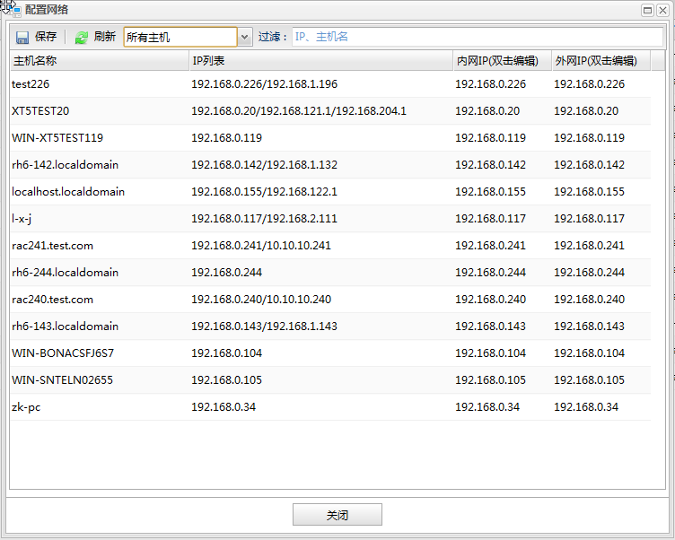
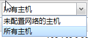
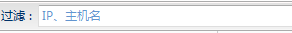

保存
保存 刷新
刷新若主机有多个网卡，需要用户手动配置网络环境。所谓的网络环境是指数据库代理连接数据库收集监控信息的ip地址（内网IP），以及dem中心与数据库代理进行通信的ip地址（外网IP）。在主机监控面板上点击配置网络按钮可以打开配置对话框，如下图所示:

功能按钮列表| 按钮 | 说明 |
|---|---|
| 保存 |
保存修改的网络配置。 |
| 刷新 |
刷新主机列表。 |
|  | 根据所选的条件进行主机列表过滤。 |
|  | 对主机列表进行ip地址或主机名的过滤。搜索输入框中输入内容，敲下回车 />。 |
主机网络环境列表
| 名称 | 说明 |
|---|---|
| 主机名称 | 主机的ip地址或名称。 |
| IP列表 | 主机上所有网卡的地址列表。 |
| 内网IP | 数据库代理连接数据库收集监控信息的ip地址。 双击该列可以进行编辑。 |
| 外网IP | dem中心与数据库代理进行通信的ip地址。 双击该列可以进行编辑。 |